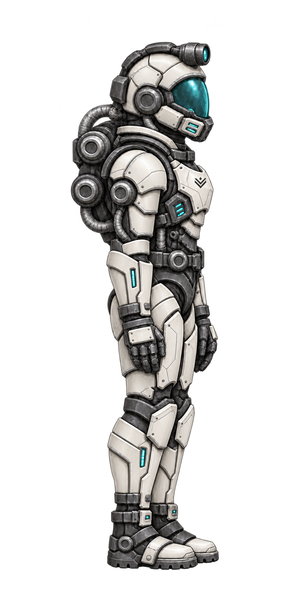
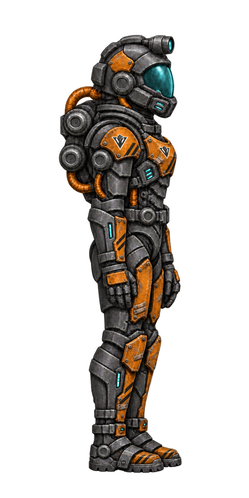
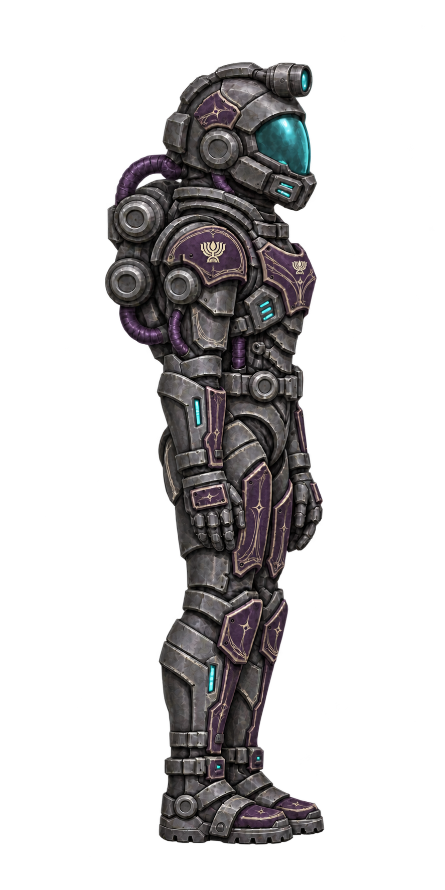
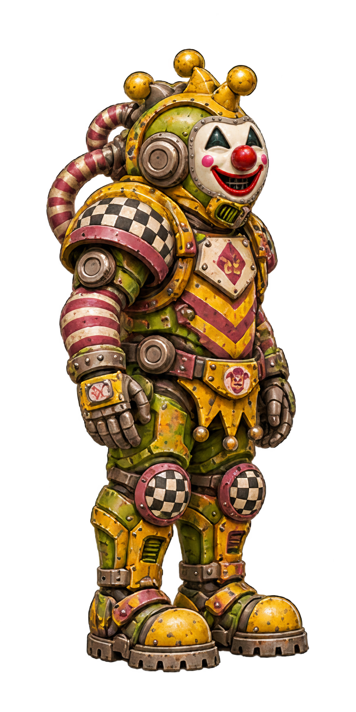

Piraci10 000 marek · Zbrojmistrz
czerwony · czaszka ze skrzyżowanymi kluczami, spawy i łatane płyty


Descendens10 000 marek · Sklep naukowy
biały · podwójny szewron z rombem, ceramiczne panele i precyzyjne podziały


Koalicja10 000 marek · Sklep wojskowy Koalicji
niebieski · gwiazda nad kołem zębatym, wojskowe pasy i srebrne obrzeża


Separatyści10 000 marek · Sklep wojskowy Separatystów
pomarańczowy · pięść w trójkącie, przemysłowe płyty i pasy ostrzegawcze


Kościół Łuski10 000 marek · Handlarz Łuski
fioletowy · symbol kultu, subtelne ceremonialne grawerunki i kość słoniowa


Dzieci Honkomatki10 000 marek · Handlarz Klaunów
zielony z żółtymi akcentami · twarz błazna w rombie, drobna szachownica i żółte wstawki
